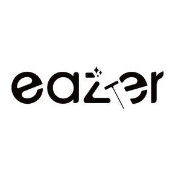

Trade Mark Journal No.2025/036 5 September 2025
UK00004252349 21 August 2025 (21)

- Class 21
- Brushes for household use; Brushes for cleaning; Cleaning brushes; Household utensils for cleaning, brushes and brush-making materials; Brushes for household purposes; Floor brushes; Brushes for parquet floors; Brushes; Mopping brushes; Floor cloths; Window dusters; Dusters; Telescopic window cleaners; Window boxes; Furniture dusters; Mops; Rag mops; Wringer mops; Swivel mops; Mop pails incorporating mop wringers; Brushes for pets; Brushes for grooming pet animals; Deshedding brushes for pets; Electric pet brushes; Raccoon dog hair for brushes; Tub brushes; Bathtub brushes; Bath brushes; Toilet brushes; Shampoo brushes; Lavatory brushes; Toilet brush sets; Toilet brush holders; Washing-up brushes; Mop heads; Mop buckets; Mop pails; Mop wringers; Mop wringer buckets; Abrasive sponges for kitchen [cleaning] use; Window groove cleaning brushes; Squeegees [hand-operated] for cleaning; Adhesive rollers for cleaning; Squeegee sponges; Dishcloths; Dishcloths for washing dishes; Potholders; Cleaning mitts of fabric; Kitchen mitts; Water syringes for spraying plants; Carpet shampoo applicators (Non-electric -); Vacuum jugs (Non-electric -); Brushes connectable to water hoses; Heaters for feeding bottles, non-electric; Car washing mitts; Washing brushes; Cloth for washing floors; Washing floors (Cloth for -); Drying racks for washing; Oven mitts; Trash containers for household use; Baskets for waste paper littering for household purposes; Trash cans; Laundry bins for household purposes; Containers for ice, for household purposes; Automatic opening and closing trash cans for household purposes; Garbage cans; Waste bins for household use; Baskets for household purposes; Metal baskets for household purposes; Electric lint removers; Lint removers, electric or non-electric; Non-electric lint removers; Battery operated lint removers; Lint rollers [adhesive] for removing lint from clothing; De-shedding combs for pets; Deshedding combs for pets; Combs for animals; Toothbrushes for pets; Combs; Cages for pets; Cages for household pets; Pets (Cages for household -); Hair combs; Wire cages for household pets; Cleaning combs; Horse combs; Lint rollers for clothes; Lint rollers; Lint rollers for floors; Lint brushes; Clothes brushes; Clothes drying hangers; Dustpans; Brooms; Squeegees [cleaning instruments]; Sifters [household utensils]; Scourers for saucepans; Gardening gloves; Gloves (Gardening -); Gloves for gardening; Household gloves; Dusting gloves.
SVC INTERNATIONAL INC
Representative: DY CNUK Ltd